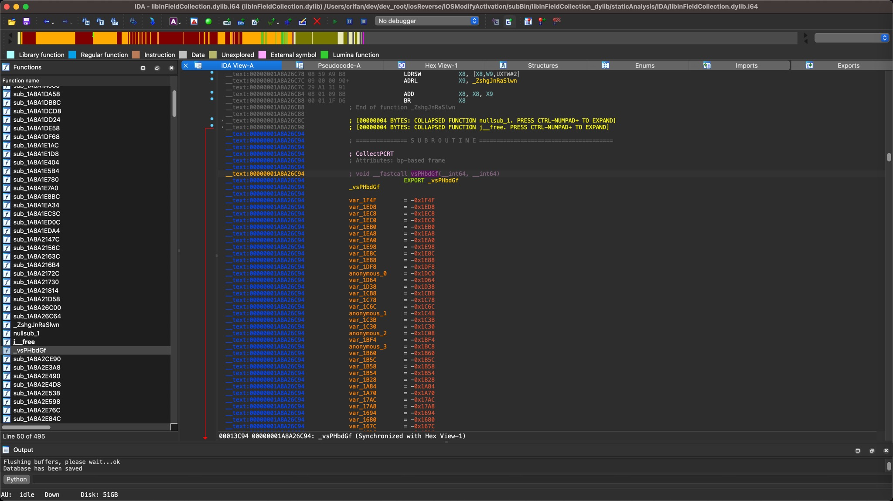
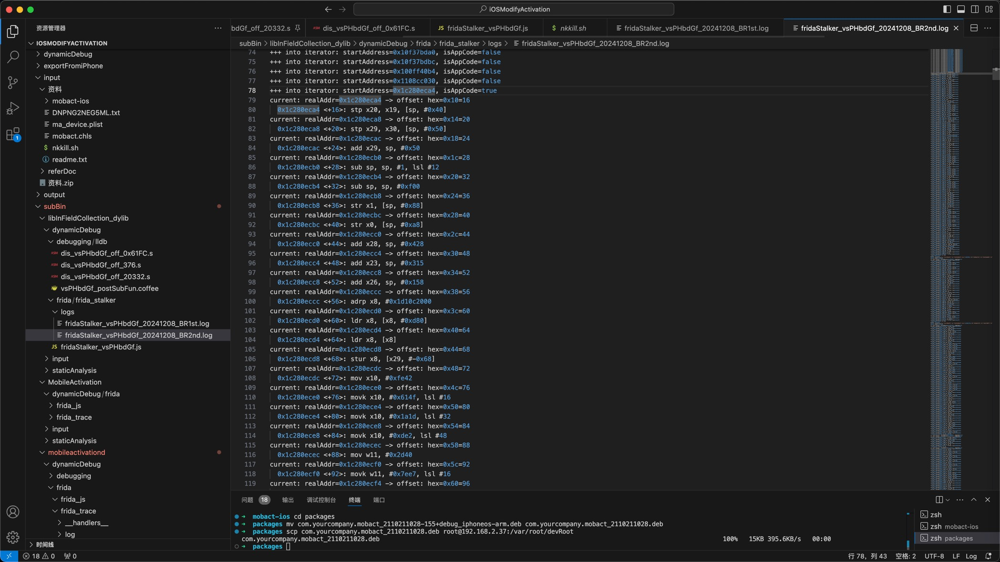

16字节之前的开始那段代码无法调试
Frida的Stalker，触发的时候，往往第一行代码，确切的说是前面一小段代码，是无法打印出来的
而能开始打印的时候，往往是代码向后偏移大概0x10=16字节之后，才能打印出来
举例
想要去hook函数：
IDA中，起始地址是：

__text:00000001A8A26C94 ; CollectPCRT
__text:00000001A8A26C94 ; Attributes: bp-based frame
__text:00000001A8A26C94
__text:00000001A8A26C94 ; void __fastcall vsPHbdGf(__int64, __int64)
__text:00000001A8A26C94 EXPORT _vsPHbdGf
...
__text:00000001A8A26C94 FC 6F BA A9 STP X28, X27, [SP,#-0x10+var_50]!
__text:00000001A8A26C98 FA 67 01 A9 STP X26, X25, [SP,#0x50+var_40]
__text:00000001A8A26C9C F8 5F 02 A9 STP X24, X23, [SP,#0x50+var_30]
__text:00000001A8A26CA0 F6 57 03 A9 STP X22, X21, [SP,#0x50+var_20]
__text:00000001A8A26CA4 F4 4F 04 A9 STP X20, X19, [SP,#0x50+var_10]
__text:00000001A8A26CA8 FD 7B 05 A9 STP X29, X30, [SP,#0x50+var_s0]
__text:00000001A8A26CAC FD 43 01 91 ADD X29, SP, #0x50
__text:00000001A8A26CB0 FF 07 40 D1 SUB SP, SP, #1,LSL#12
libInFieldCollection.dylib的vsPHbdGf
中的输出是：
into hookNative:
into stalkerHookNative_vsPHbdGf:
libraryName=libInFieldCollection.dylib -> moduleBaseAddress=0x1c27fb000
origFuncPtr=0x1c280ec94
funcRelativeStartAddr=81044
functionSize=25084=0x61fc, argNum=2
Frida Stalker hook: module: baseAddress=0x1c27fb000
function: relativeStartAddr=0x13c94, size=25084=0x61fc, relativeEndAddr=0x19e90
funcRealStartAddr=0x1c280ec94, funcRealEndAddr=0x1c2814e90
curTid=null
[iPhone::mobileactivationd ]-> ============ Trigged addr: relative [0x13c94] = real [0x1c280ec94] ============
arg[0]=0x16fa8a988
arg[1]=0x16fa8a984
curTid=21019
+++ into iterator: startAddress=0x10f3c1768, isAppCode=false
+++ into iterator: startAddress=0x10f3c1778, isAppCode=false
...
+++ into iterator: startAddress=0x1108cc030, isAppCode=false
+++ into iterator: startAddress=0x1c280eca4, isAppCode=true
current: realAddr=0x1c280eca4 -> offset: hex=0x10=16
0x1c280eca4 <+16>: stp x20, x19, [sp, #0x40]
current: realAddr=0x1c280eca8 -> offset: hex=0x14=20
0x1c280eca8 <+20>: stp x29, x30, [sp, #0x50]
current: realAddr=0x1c280ecac -> offset: hex=0x18=24
0x1c280ecac <+24>: add x29, sp, #0x50
...

此时：
- 函数的第一行代码=函数起始地址是：
0x1c280ec94 - 真正开始打印log日志的地址是：
0x1c280eca4- 已经是起始地址的偏移量：
0x10=16了
- 已经是起始地址的偏移量：
原因
猜测是和Frida的Stalker的内部实现机制有关系：
好像大概意思是，从原始代码code拷贝到新的地方，再去hook和打印
使得好像无法实现最初代码的hook？？
影响和结果
无法实现，去函数最开始的几行（4行）代码去hook（比如打印输出参数时的寄存器值等等）
即：
此处开始打印hook的代码，已经是：
__text:00000001A8A26C94 FC 6F BA A9 STP X28, X27, [SP,#-0x10+var_50]!
__text:00000001A8A26C98 FA 67 01 A9 STP X26, X25, [SP,#0x50+var_40]
__text:00000001A8A26C9C F8 5F 02 A9 STP X24, X23, [SP,#0x50+var_30]
__text:00000001A8A26CA0 F6 57 03 A9 STP X22, X21, [SP,#0x50+var_20]
__text:00000001A8A26CA4 F4 4F 04 A9 STP X20, X19, [SP,#0x50+var_10]
中的：
__text:00000001A8A26CA4 F4 4F 04 A9 STP X20, X19, [SP,#0x50+var_10]
对应着输出的：
- 偏移量是：
0x10=16的0x1c280eca4
+++ into iterator: startAddress=0x1c280eca4, isAppCode=true
current: realAddr=0x1c280eca4 -> offset: hex=0x10=16
0x1c280eca4 <+16>: stp x20, x19, [sp, #0x40]
而要去hook前面（16字节=0x10=占用4个指令的大小）4行代码：
__text:00000001A8A26C94 FC 6F BA A9 STP X28, X27, [SP,#-0x10+var_50]!
__text:00000001A8A26C98 FA 67 01 A9 STP X26, X25, [SP,#0x50+var_40]
__text:00000001A8A26C9C F8 5F 02 A9 STP X24, X23, [SP,#0x50+var_30]
__text:00000001A8A26CA0 F6 57 03 A9 STP X22, X21, [SP,#0x50+var_20]
目前看来，就无法实现了
如何解决
暂时无解。
除非以后对Stalker机制有深入了解，看看是否有机会解决此，感觉算是Stalker的bug了。